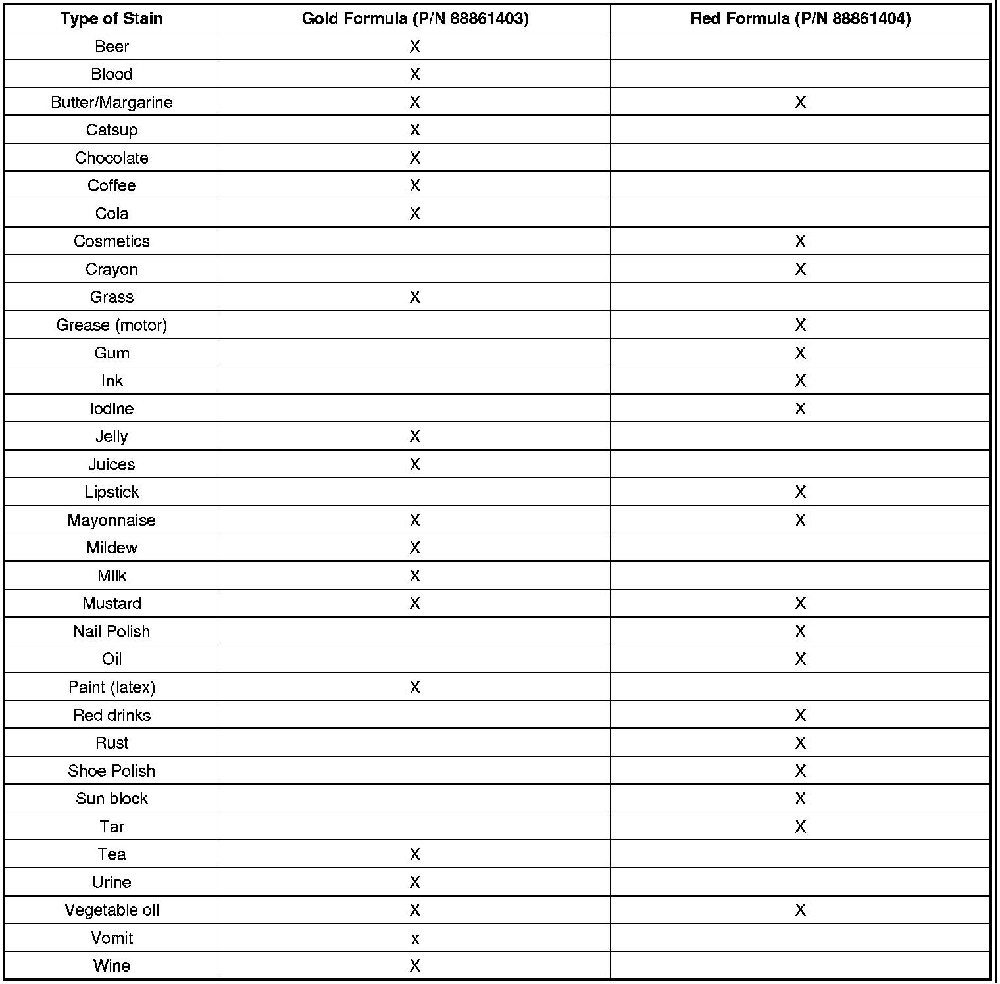
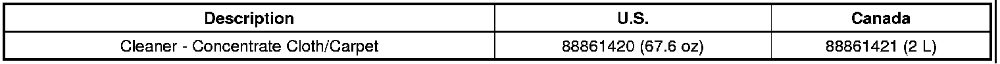

Interior - Interior Surfaces Cleaning
INFORMATIONBulletin No.: 06-00-89-029E
Date: May 18, 2009
Subject: Interior Cleaning - Instrument Panel (IP), Hard or Plastic Surfaces, Seats, Carpet, Leather, Vinyl, Fabric Cleaner, Stain Remover, Restorer - Product Availability
Models:
2006-2010 GM Passenger Cars and Trucks including Saturn (EXCLUDES Cadillac DTS Platinum and Escalade Platinum with RPO R9N - Tehama Leather)
2006-2010 HUMMER H2, H3
2006-2009 Saab 9-7X
Supercede:
This bulletin is being revised to update the model years and include additional models. Please discard Corporate Bulletin Number 06-00-89-029D (Section 00 - General Information).
To keep the vehicle interior looking the best, it should be cleaned often. It is important to keep the upholstery from becoming heavily soiled. The vehicle's interior can experience extreme heat, which can cause stains to set quickly. Lighter color interiors may require more frequent cleaning. Care should be taken because newspapers and garments may transfer color to the vehicle's interior.
Many of today's interiors are made with new low gloss materials. Permanent damage may result from using cleaners on ANY surfaces (interior trim, instrument panel, carpet, leather, vinyl and fabric) for which they are not intended. Using non-approved products can actually set the stain to the point that nothing can remove it.
Important
- Do not use silicone or wax-based products or those containing organic solvents (such as naptha, alcohol, etc.) to clean your vehicle's interior because they can alter the appearance by increasing the gloss in a non-uniform manner. The increase in gloss may cause annoying reflections in the windshield and even make it difficult to see through the windshield under certain conditions.
- Never use a STIFF brush or a brush that has been previously used with a harsh chemical. This can cause damage to the vehicle's interior surfaces.
- Use only mild, Neutral-pH cleaners. Avoid laundry detergents or dishwashing soaps with degreasers. Using too much soap will leave residue that leaves streaks and attracts dirt.
Because it is critical to use only mild, neutral-pH cleaners, General Motors has approved the use of the cleaners and conditioners listed in this bulletin for the cleaning of interiors. These products are in the neutral-pH range and will maintain the best vehicle interior appearance. These products are water-based, biodegradable, and do not contain bleach, solvents or harsh chemicals.
Interior trim pieces on new vehicles, as well as service components, arrive with a protective film. When removing the protective film, adhesive residue may be left on the trim panels/components. The cleaner (for leather, vinyl, plastic and interior paint) is an effective cleaner in removing adhesive residue without causing damage to the component.
Important
- If soapy, alkaline cleaning solutions are used on fabrics, and not thoroughly rinsed out, the residual left in the fabric will attract dirt. Because the recommended cleaners/conditioners are in the pH neutral range, they won't leave behind soapy residue.
- On heavily stained or difficult to clean fabric/carpet, it is recommended that the entire surface be treated and cleaned vs. spot cleaning. Refer to Extractor Machine and Concentrate section of this bulletin for more information.
Effective cleaning steps for hard and/or plastic surfaces:
1. Using a clean towel, apply/spray cleaner - leather, vinyl, plastic, interior paint, directly onto the towel.
2. Wipe the surface with the towel/cleaner.
3. If necessary, use a soft bristle brush to work cleaner into the crevasses of the area being cleaned.
4. Wipe off any excess cleaner from the surface.
5. Using a clean towel, apply/spray the conditioner (leather, vinyl restorer) directly onto the towel.
6. Wipe the conditioner onto the previously cleaned area to restore the material to it's original luster.
Important
Today's interiors are developed and intended to have a low-gloss appearance. It is important to use only products which provide a low-gloss finish in order to maintain the interior's integrity, customer appeal and satisfaction.
Effective cleaning steps for fabric:
1. Remove any residue by lightly rubbing the surface with a clean towel.
2. Choose the appropriate stain remover based on the stain type.
3. Spray and lightly brush the area with a clean, soft bristle brush.
4. Gently blot up the stain.
5. On upholstery/carpet, the use of a fabric protector can help to reduce or eliminate future staining.
Upholstery and Carpet Stains
When cleaning upholstery and carpet stains ONLY, the following cleaning chart will help you determine which cleaner/formula works best on a particular stain. The chart lists many of the common stains. Some complex stains may require the application of both stain removers, one after the other, to remove both food-based oils and synthetic oils.
A soft bristle brush (P/N 88861425) should be used to safely work the cleaner into the leather grain or material. This enables the dirt/stain to be completely removed from the material.

Leather Conditioner/Restorer
A Leather Conditioner/Restorer is also available. The restorer is safe for all vinyl and leather. It is a water-based product and contains essential emollients to restore suppleness, conditions and adds luster without adding gloss. The restorer will also provide protection against re-staining.
Dye Transfer: Dye transfer will happen any time a natural fiber like cotton, silk, wool, or suede comes into contact with leather. The lighter the leather color, the more quickly the dye transfer will appear. Leather should be cleaned on a regular basis so that the dirt and grime do not adversely affect the top coat of the leather. After cleaning the leather, it is important to treat the surface with the restorer.
Extractor Machine and Concentrate
Important
The concentrate may not yet be available for Saab and/or Saturn Dealers. The product can be obtained from a General Motors dealership until such time it is available through Saab and/or Saturn Parts Departments.
For difficult to clean materials or when cleaning a large area, the best results will be achieved when using an extractor machine and concentrate. General Motors offers the Ruby Extractor (P/N 627-CC-3000AU) through GM Tools and Equipment 1-800-GM-TOOLS, and has recently released a concentrate for use with the extractor machine.
Whichever extractor machine is used, it should meet the minimum specifications of the Ruby Extractor:
Ruby Extractor Specifications:
- Pump PSI: 55
- Water Lift: 85"
- Hose Length: 10 ft
Important
The Ruby Extractor also comes with a 6 year Outer Body and 3 year Parts warranty.
Extractor: The Ruby Extractor machine was designed for automotive use and works effectively in the vehicle's interior. The narrow design of the vacuum head allows detail work in tight areas. The water pressure pump is reduced so the fabric surface is not wet more than is necessary. The dry time is greatly reduced due to less water on the fabric surface, the vacuum head making better contact with the surface and the significant water lift capability of the machine.
Concentrate: The concentrated extraction cleaner is engineered with lower pH levels to help remove alkaline buildup on fabrics. The concentrate should be mixed according to the instructions listed on the container. The available concentrate helps to break the stain down and then the stain is easily removed with less water. The concentrate used in the Ruby Extractor is slightly acidic to remove soap and alkalinity from the fabric surfaces left behind by using improper, soapy solutions. Dirt, grease and grime are more easily removed when the proper solution is used during the extraction process.
Parts Information
Products are available in two sizes; 8 oz / 235 ML and 24 oz / 710 ML bottles.




Available Equipment

Equipment is available by contacting 1-800-GMTOOLS.

Disclaimer